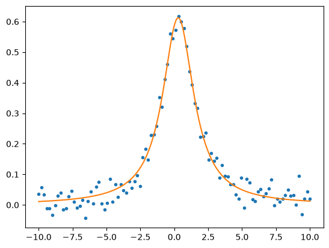

Lorentzian fit#
import numpy as np
import matplotlib.pyplot as plt
Note that for simplicity here we will set \(\sigma_i=1\) when calculating the residuals and the \(\mathbf{A}\) matrix. This means our best fit \(\chi^2\) will be \(<1\). In a real application, you would want to put these factors back in.
def lorentz(a, x, finite_difference = False):
# Calculates the Lorentz function and the derivative with respect to the parameters
y = a[0] / (a[1] + (x-a[2])**2)
A = np.zeros([len(x), len(a)])
if finite_difference:
eps = 1e-8
b = a * (1+eps)
y0 = b[0] / (a[1] + (x-a[2])**2)
y1 = a[0] / (b[1] + (x-a[2])**2)
y2 = a[0] / (a[1] + (x-b[2])**2)
A[:, 0] = (y0 - y) / (b[0]-a[0])
A[:, 1] = (y1 - y) / (b[1]-a[1])
A[:, 2] = (y2 - y) / (b[2]-a[2])
else:
A[:, 0] = 1 / (a[1] + (x-a[2])**2)
A[:, 1] = - a[0] / (a[1] + (x-a[2])**2)**2
A[:, 2] = 2 * a[0] * (x-a[2]) / (a[1] + (x-a[2])**2)**2
return y, A
# Generate a set of "measurements" of a Lorentzian function
a0 = np.array((1.2, 2, 0.3)) # parameters of the Lorentzian
ndata = 100 # number of measurements
x = np.linspace(-10, 10, ndata)
y, _ = lorentz(a0, x)
y = y + 0.03 * np.random.normal(size = ndata)
# Initial guess for Newton's method
a = np.array((1,1,1))
# we have two options: analytic or numerical derivatives
finite_difference = True
# print the starting parameters and error
f, _ = lorentz(a, x, finite_difference=finite_difference)
r = y-f
last_chisq = 1e99
chisq = np.sum(r**2)
print("chisq = %g, a=(%lg, %lg, %lg)" % (chisq, a[0], a[1], a[2]))
# keep iterating while chi-squared drops by at least 1e-3
# note that this means we will also stop if chi-squared starts to increase
# which means we are not converging
while last_chisq - chisq > 1e-3:
# calculate the update to the parameters
f, A = lorentz(a, x, finite_difference=finite_difference)
r = y-f
lhs = A.T@A
rhs = A.T@r
da = np.linalg.inv(lhs)@rhs
a = a + da
# update the error
last_chisq = chisq
f, _ = lorentz(a, x, finite_difference=finite_difference)
r = y-f
chisq = np.sum(r**2)
print("chisq = %g, a=(%lg, %lg, %lg)" % (chisq, a[0], a[1], a[2]))
print("a-a0 =", a-a0)
chisq = 1.72874, a=(1, 1, 1)
chisq = 0.33458, a=(1.25457, 1.7992, 0.70037)
chisq = 0.0890185, a=(1.31308, 2.20991, 0.365282)
chisq = 0.0796336, a=(1.18734, 1.93807, 0.289017)
chisq = 0.0796247, a=(1.18877, 1.94155, 0.291762)
a-a0 = [-0.01122692 -0.05845446 -0.00823828]
plt.plot(x, y, ".")
xx = np.linspace(-10, 10, 1000)
yy, _ = lorentz(a, xx)
plt.plot(xx,yy)
plt.show()

# Use the scipy least squares fitting routine to compare
import scipy.optimize
def res(a, x, y0):
f = a[0] / (a[1] + (x-a[2])**2)
return y-f
result = scipy.optimize.least_squares(res, (1,1,4), args=(x,y), method = 'lm')
print("Best-fit parameters are: ", result.x, " chisq = ", 2*result.cost)
plt.plot(x, y, ".")
xx = np.linspace(-10, 10, 1000)
yy, _ = lorentz(result.x, xx)
plt.plot(xx,yy)
plt.show()
Best-fit parameters are: [1.18882201 1.94165041 0.29179992] chisq = 0.0796247093327357
# Levenberg-Marquardt
# Note that this starting point doesn't converge for Newton!
a = np.array((1,1,4))
# we have two options: analytic or numerical derivatives
finite_difference = True
chisq1 = 1.0
chisq = 1e99
lam = 1e-3
# keep going while chisq is dropping
while chisq > 1e-6:
# compute the update to the parameters
f, A = lorentz(a, x, finite_difference=finite_difference)
r = y-f
chisq = np.sum(r**2)
lhs = A.T@A
lhs = lhs@(np.identity(len(a))*(1+lam))
rhs = A.T@r
da = np.linalg.inv(lhs)@rhs
# calculate the chisq associated with the new parameters
a1 = a + da
f1, A1 = lorentz(a1, x, finite_difference=finite_difference)
r1 = y-f1
chisq1 = np.sum(r1**2)
print("chisq = %lg, a=(%lg, %lg, %lg), lam = %lg" % (chisq1 ,a1[0], a1[1], a1[2], lam))
# accept if chisq decreases; reject if it increases
if chisq1 > chisq:
lam = lam * 10
else:
lam = lam / 10
a = a1
# if the improvement in chisq becomes too small then exit
if chisq-chisq1 < 1e-3:
break
print("a-a0 =", a-a0)
print("Best-fit parameters are: ", a)
plt.plot(x, y, ".")
xx = np.linspace(-10, 10, 1000)
yy, _ = lorentz(a, xx)
plt.plot(xx,yy)
plt.show()
chisq = 4.23543, a=(1.07494, 2.14373, 3.82558), lam = 0.001
chisq = 2.47195, a=(2.40285, 7.14087, 3.11996), lam = 0.0001
chisq = 1.22478, a=(5.66093, 21.2952, 0.43278), lam = 1e-05
chisq = 496.59, a=(-5.16508, -34.0623, 0.25906), lam = 1e-06
chisq = 498.231, a=(-5.16498, -34.0618, 0.259061), lam = 1e-05
chisq = 515.23, a=(-5.16401, -34.0568, 0.259077), lam = 0.0001
chisq = 768.789, a=(-5.15428, -34.0071, 0.259233), lam = 0.001
chisq = 323.798, a=(-5.0579, -33.5143, 0.260779), lam = 0.01
chisq = 150.843, a=(-4.18091, -29.0299, 0.274852), lam = 0.1
chisq = 6.85541, a=(0.247919, -6.3836, 0.34592), lam = 1
chisq = 1.04482, a=(4.67675, 16.2627, 0.416987), lam = 10
chisq = 240.737, a=(0.764918, -2.67533, 0.338563), lam = 1
chisq = 0.887119, a=(3.96551, 12.8194, 0.402728), lam = 10
chisq = 582.68, a=(1.05352, -0.554768, 0.332524), lam = 1
chisq = 0.751049, a=(3.43605, 10.3877, 0.389964), lam = 10
chisq = 6.66642, a=(1.2185, 0.694919, 0.32776), lam = 1
chisq = 0.635236, a=(3.03286, 8.6254, 0.378654), lam = 10
chisq = 0.701104, a=(1.31234, 1.44107, 0.323975), lam = 1
chisq = 0.537766, a=(2.72004, 7.31916, 0.368712), lam = 10
chisq = 0.201339, a=(1.36362, 1.88619, 0.320885), lam = 1
chisq = 0.081053, a=(1.20605, 1.93177, 0.29867), lam = 0.1
chisq = 0.079625, a=(1.18928, 1.94199, 0.292021), lam = 0.01
chisq = 0.0796247, a=(1.18883, 1.94166, 0.291803), lam = 0.001
a-a0 = [-0.01117384 -0.05834111 -0.00819674]
Best-fit parameters are: [1.18882616 1.94165889 0.29180326]